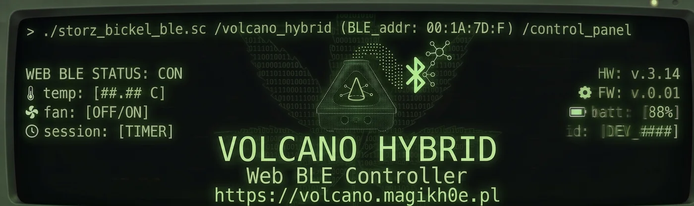

Drive a Storz & Bickel Volcano Hybrid straight from the browser over Web Bluetooth — no app, no backend, nothing leaves your machine. New here? Help & requirements ↗
This browser doesn't support Web Bluetooth. Open this page in desktop Chrome / Edge / Opera or Android Chrome.
Presets are your one-tap temperature shortcuts, saved in this browser. Tap a chip above to remove it, or add your own below.
Reset restores the defaults — the Vapesuvius ladder that steps 179→230 °C through a full-spectrum session.
Connect to read serial number, firmware versions, and hours of operation.
These change the Volcano's own screen and haptics — the Control panel always reads °C, since the device reports temperature in °C over BLE regardless.
Script your own heat / fan / wait sequences — saved in this browser, run over the live connection. The action model is inspired by Project Onyx; see Help for how each action works.
A command line for the Volcano. Type help. Chain commands with ; to run a sequence, or run <name> a saved workflow.